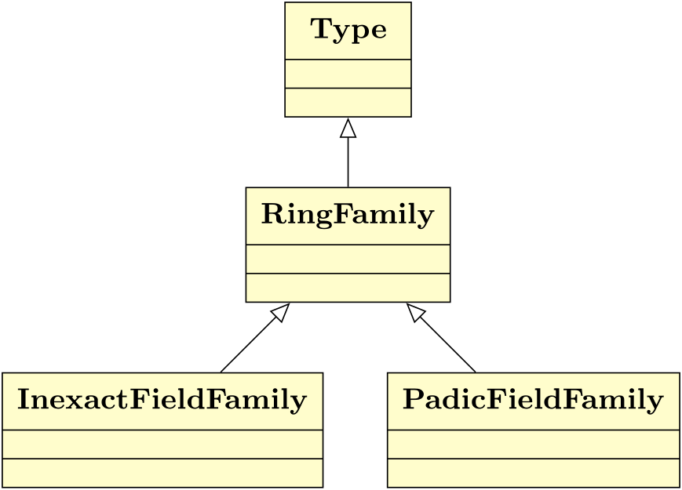
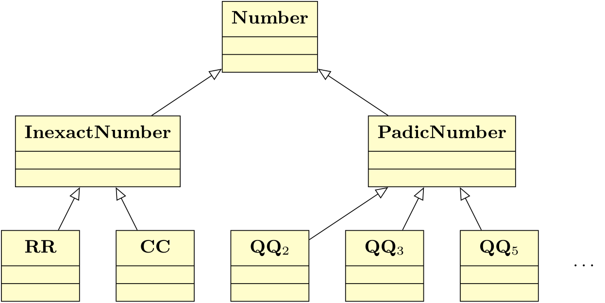

Implementing p-adic numbers in Macaulay2 using its foreign function interface and FLINT
Douglas A. Torrance
Georgia Tech
ICMS 2026
What is Macaulay2?
Macaulay2 is a computer algebra system for research in algebraic geometry and commutative algebra.
It supports computations in a wide variety of rings:
- $\mathbb Z$, $\mathbb Q$, $\mathbb R$, $\mathbb C$, $\mathbb F_{p^k}$
- polynomial rings
- quotient rings
- local rings, fraction fields
What's missing?
The $p$-adics $\mathbb Q_p$ (prime $p$)
$$\sum_{n=k}^\infty a_n p^n = a_k p^k + a_{k + 1}p^{k + 1} + \cdots$$
$$a_n\in\{0,\ldots,p-1\}$$
Arithmetic
Addition and multiplication are defined in the usual way in base $p$, but carrying may continue indefinitely.
\[
\begin{array}{rl}
&6\cdot7^0 + 6\cdot7^1 + 6\cdot7^2 + \cdots \\
+&1\cdot7^0 \\
\hline
\end{array}
\]
\[
\begin{array}{rl}
&6\cdot7^0 + 6\cdot7^1 + 6\cdot7^2 + \cdots \\
+&1\cdot7^0 \\
\hline
&\textcolor{#d1495b}{7\cdot7^0}
\end{array}
\]
\[
\begin{array}{rl}
&6\cdot7^0 + 6\cdot7^1 + 6\cdot7^2 + \cdots \\
+&1\cdot7^0 \textcolor{#859900}{+ 1\cdot7^1} \\
\hline
&\textcolor{#859900}{0\cdot7^0}
\end{array}
\]
\[
\begin{array}{rl}
&6\cdot7^0 + 6\cdot7^1 + 6\cdot7^2 + \cdots \\
+&1\cdot7^0 + 1\cdot7^1 \\
\hline
&0\cdot7^0 + \textcolor{#d1495b}{7\cdot7^1}
\end{array}
\]
\[
\begin{array}{rl}
&6\cdot7^0 + 6\cdot7^1 + 6\cdot7^2 + \cdots \\
+&1\cdot7^0 + 1\cdot7^1 \textcolor{#859900}{+ 1\cdot7^2} \\
\hline
&0\cdot7^0 \textcolor{#859900}{+ 0\cdot7^1}
\end{array}
\]
\[
\begin{array}{rl}
&6\cdot7^0 + 6\cdot7^1 + 6\cdot7^2 + \cdots \\
+&1\cdot7^0 + 1\cdot7^1 + 1\cdot7^2 \\
\hline
&0\cdot7^0 + 0\cdot7^1 + \textcolor{#d1495b}{7\cdot7^2}
\end{array}
\]
\[
\begin{array}{rl}
&6\cdot7^0 + 6\cdot7^1 + 6\cdot7^2 + \cdots \\
+&1\cdot7^0 + 1\cdot7^1 + 1\cdot7^2 + \cdots \\
\hline
&0\cdot7^0 + 0\cdot7^1 + 0\cdot7^2 + \cdots
\end{array}
\]
$\implies$ in $\mathbb Q_7$,
$$-1 = 6\cdot 7^0 + 6\cdot 7^1 + 6\cdot 7^2 + \cdots$$
p-adic valuation
If $x\in\mathbb Q_p$, then $\nu_p(x)$ is the smallest exponent with a nonzero coefficient in this expansion.
e.g., $\nu_7(-1) = 0$.
p-adic absolute value
If $x\in\mathbb Q_p$, then
$$|x|_p = p^{-\nu_p(x)}$$
$\mathbb Q_p$ is the completion of $\mathbb Q$ under $|\cdot|_p$ just as $\mathbb R$ is the completion of $\mathbb Q$ under the usual absolute value $|\cdot|$.
p-adic integers
$\mathbb Z_p = \{x\in\mathbb Q_p:\nu_p(x) \geq 0\}$ is a ring.
Its units are $\mathbb Z_p^\times = \{x\in\mathbb Q_p:\nu_p(x) = 0\}.$
Representing p-adics
If $x\in\mathbb Q_p$ is nonzero with $\nu_p(x)=k$, then
$$x = \sum_{n=k}^\infty a_n p^n = \left(\sum_{n=0}^\infty a_{n+k}p^n\right)p^k = up^k$$
Note: $u\in\mathbb Z_p^\times$
Precision
Just like $\mathbb R$, we can't hope to store all the digits of an element of $\mathbb Q_p$ in a computer.
So we choose some precision $N$ and restrict to $x = up^k$ with
$$u = \sum_{n=0}^{N-1}a_{n+k}p^n$$
$\implies$ Represent $x$ using $u,p,k,N\in\mathbb Z$
FLINT
FLINT (Fast Library for Number Theory) is a C library that Macaulay2 already links against. It implements $p$-adics using:
-
padic_t: $u$ (fmpz_t), $k$, $N$ (long)
-
padic_ctx_t: $p$ (fmpz_t)
Note: New alternate $p$-adic implementation in FLINT 3.6.0 (released June 29) — not yet supported in M2
Connecting FLINT w/ Macaulay2
Now: Using the ForeignFunctions package (libffi), we can call the FLINT $p$-adic functions without recompiling Macaulay2. (con: no matrices or polynomials)
TODO: Add FLINT $p$-adic support to the Macaulay2 engine to get matrices and polynomials working.
Memory allocation
Macaulay2 uses the Boehm-Demer-Weiser garbage collector and FLINT has its own functions for memory allocation and deallocation.
needsPackage "ForeignFunctions"
flint = openSharedLibrary "flint"
padicInit = foreignFunction(flint, "padic_init", void, voidstar)
padicClear = foreignFunction(flint, "padic_clear", void, voidstar)
y = getMemory(3 * size long)
padicInit y
registerFinalizer(y, padicClear)
Object-oriented design
Real and complex numbers are instances of RR and CC, resp., which are instances of InexactFieldFamily. We mimic this for $p$-adics.


TODO: PadicField
i1 : class 2.0
o1 = RR
o1 : InexactFieldFamily
i2 : ring 2.0
o2 = RR
53
o2 : RealField
There is no precision-based Ring type yet for $p$-adics since they are not supported in the engine.